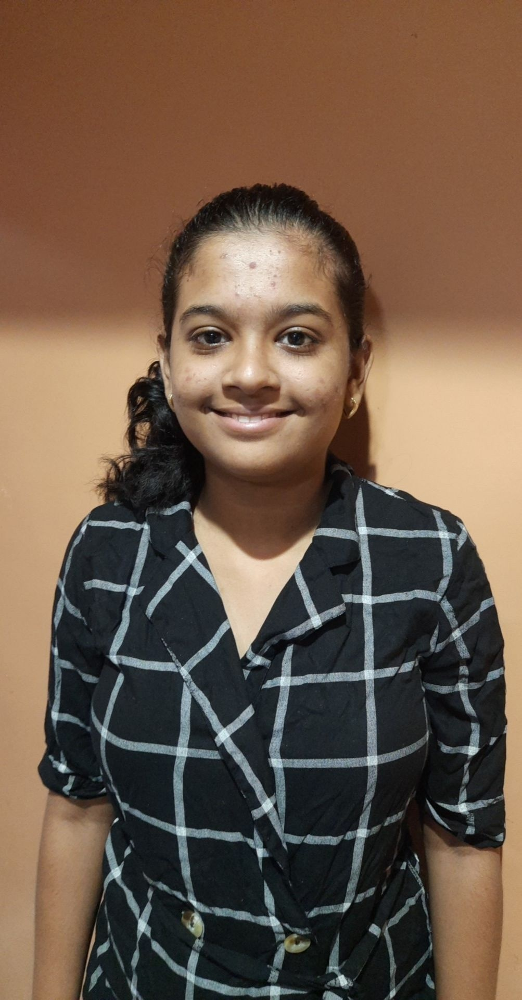

PAYAL PAGARIYA
Engineering student
studying at ndmvp college
personal info.
1. Date of birth:**/**
2.phone:7*********
3.Email:xy@gmail.com
4.linkdin profile:xy@linkdin
skills & experience:
| SKILLS | EXPERIENCE |
|---|---|
| html&css | beginner |
| java | beginner |
| c & cpp | intermediate |
Education:
| STD. | INSTITUTE | YEAR | PERCENTAGE |
|---|---|---|---|
| 10th | s.d.kude secondary school,jalgaon (state board) | 2016 | 90% |
| 12th | A.C.S. junior college,jalgaon() | 2018 | 78% |
| BE-IT(currently studying in third year) | NDMVP KBTCOE,NASHIK. | 2018-22 | 78(average of two years) |
personal goals and intrests:
I like to solve problems,and i like to gets my hand dirty in every new technologies. i like to learn new languages and love to read,and i have great intrsets in feild of cloud technologies. computer languages are like adventures which i love to dive into.